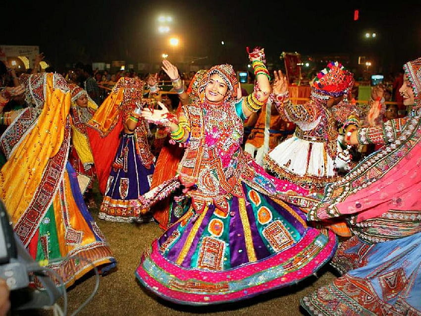
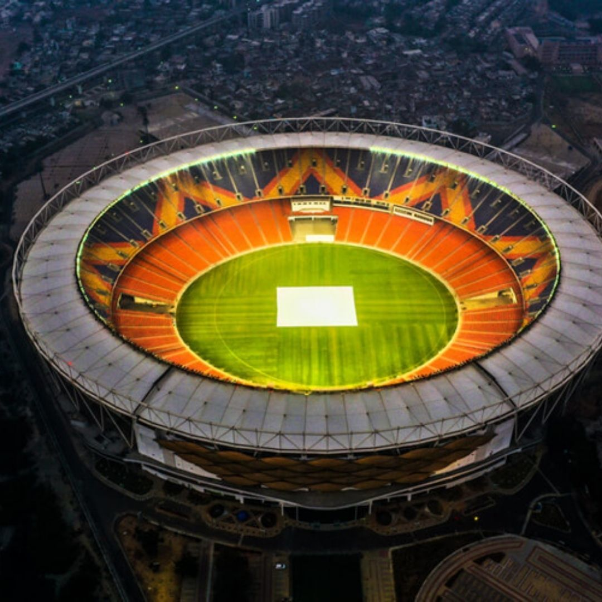
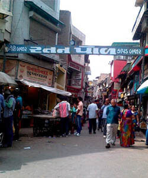
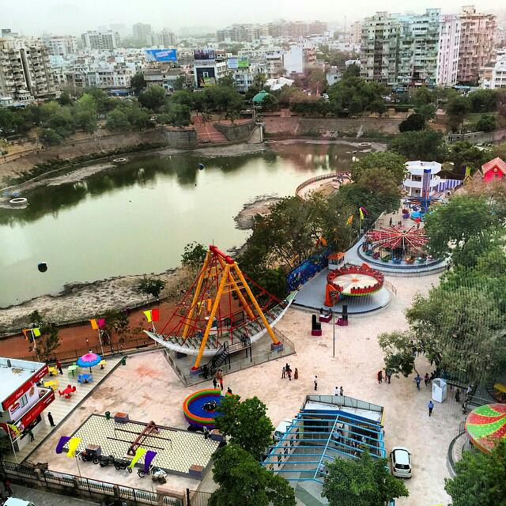

History of AHMEDABAD
The city was founded in 1411 to serve as the capital of the Sultanate of Gujarat, by its namesake, Sultan Ahmed Shah. Under British rule, a military Cantonment was established and the city infrastructure was modernized and expanded. It was part of the Bombay Presidency during the British rules in India. Kankaria Lake, in the neighbourhood of Maninagar, is an artificial lake developed by Qutb-ud-din Aibak, the Sultan of Delhi, in 1451 A.D. The city is also called Karnavati, a name for an older town that existed in the walled area.Geography
Ahmedabad is the largest city in the State of Gujarat and the Seventh- largest urban agglomeration in India, with a population of almost 74 lakhs (7.4 Million).Ahmedabad is located on the banks of the River Sabarmati in the northern part of Gujarat and the western part of India. It is located at 23.03°N 72.58°E spanning an area of 205 km². The average elevation is 53 metres.Culture
Ahmedabad enjoys rich cultural traditions, it is the center of Gujarati cultural activities and has various traditions of different ethnic and religious communities. The festivals celebrated here include Ganesh Chaturthi, Navaratri, Diwali, Chrishtmas, Eid ul-Fitr, Uttarayan etc.
Tourist Attraction
Some of the features that perfectly describe the Amdavad city are splendid monuments, wonderful museums, temples, riverfront, gorgeous lakes, manekchowk(street food market) and polls. There is an abundance of sightseeing places in Amdavad that are truly worth visiting. Adalaj is one of the most excellent step wells or baolis of Gujarat.
   